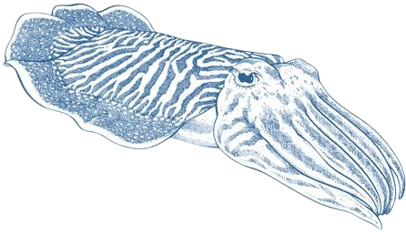

| Accueil | Recherche | Enseignement | in english |

Je suis intéressée par la sémantique dénotationelle, en particulier la sémantique des jeux. Pendant ma thèse, j'ai particulièrement étudié les jeux concurrents à pointeurs (PCG), un modèle de jeux développé pour étudier la structure causale des stratégies innocentes. Mon manuscrit de thèse (en anglais) est disponible [ici] et propose une introduction détaillée (et, idéalement, pédagogique) au modèle PCG ; ainsi qu'une présentation de ses liens avec le calcul à ressources.
J'espère continuer dans le futur à explorer les liens entre sémantique et syntaxe, et entre les différents modèles des langages de programmation -- et je serais ravie d'en discuter à l'occasion par mail ou irl !